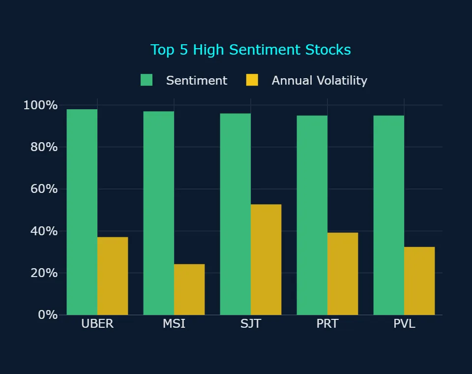
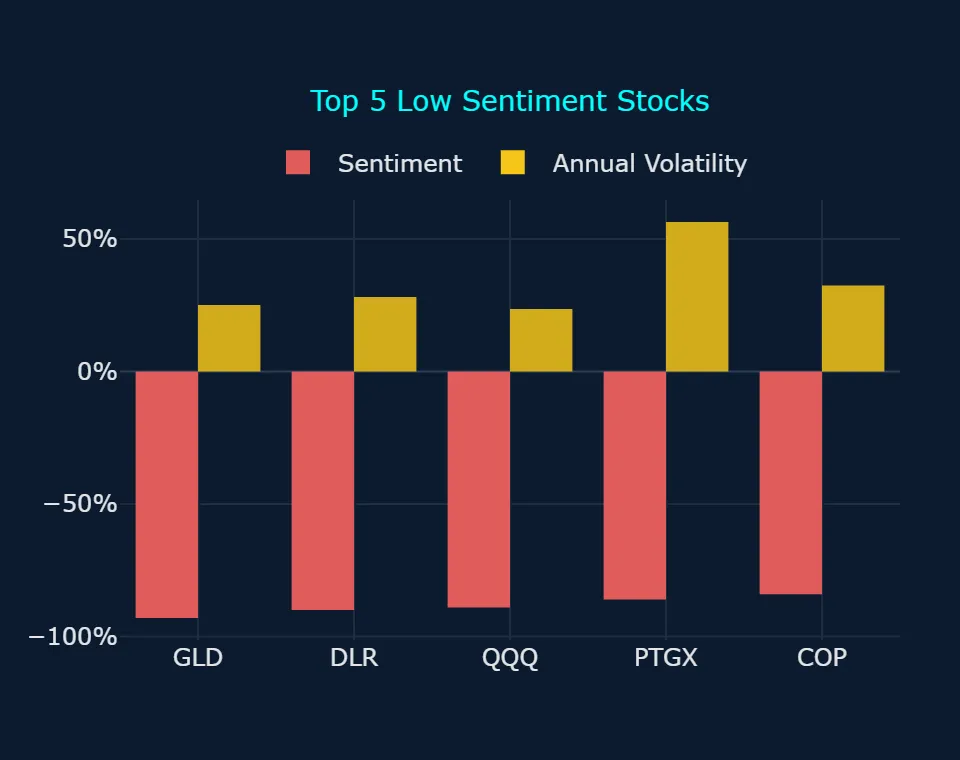
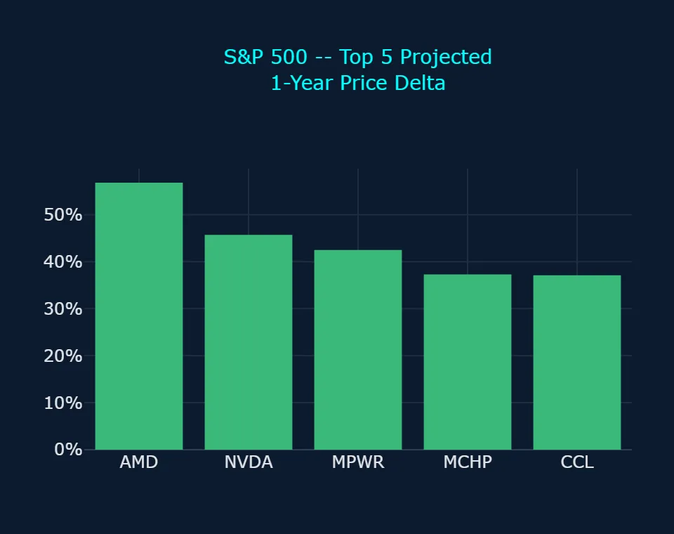
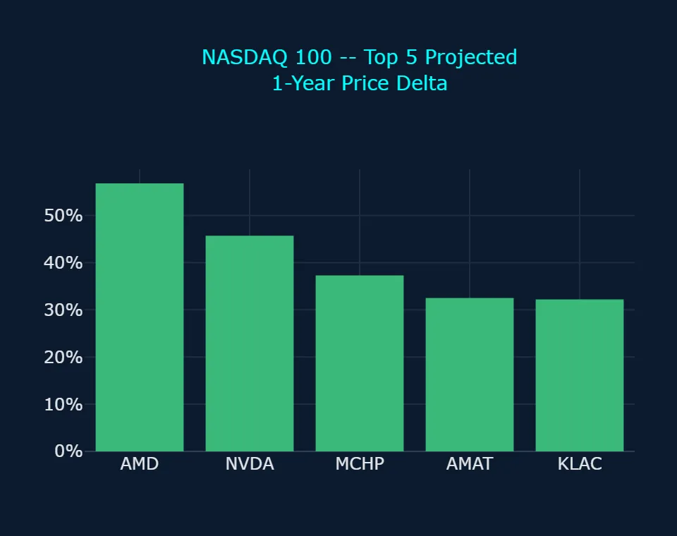
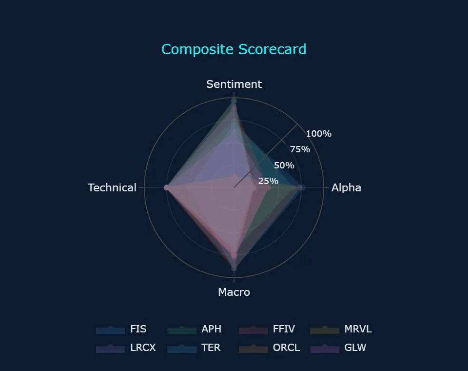
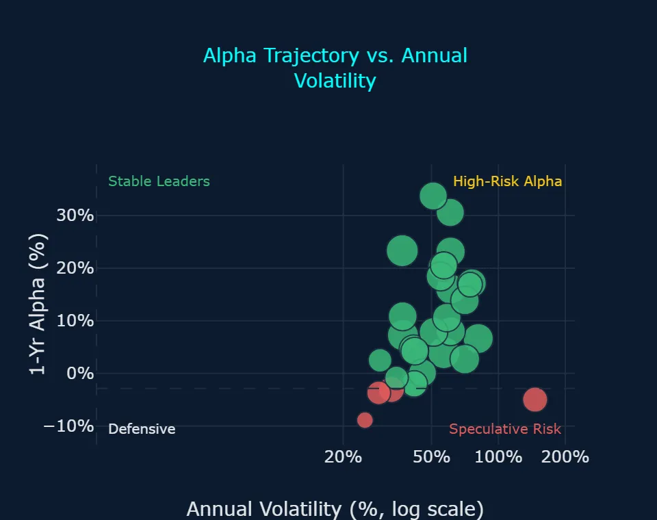
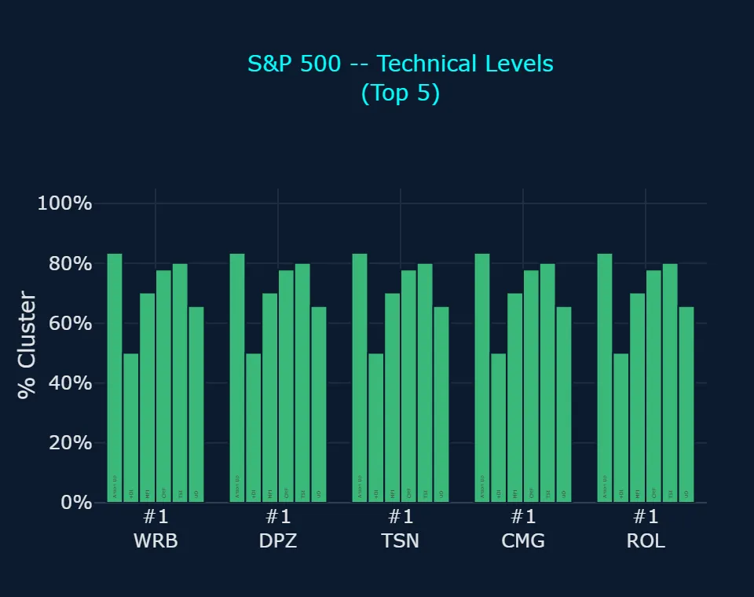
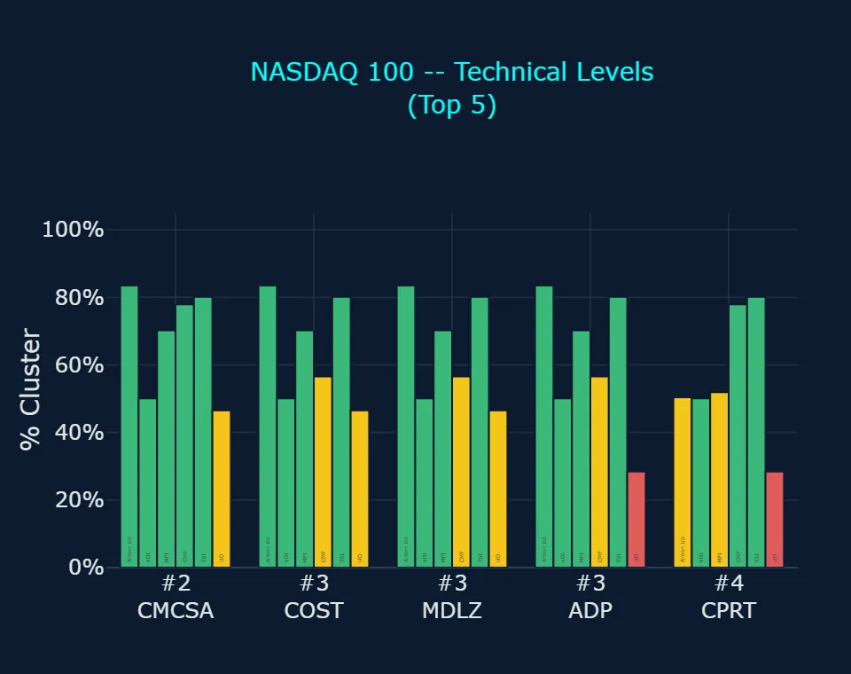
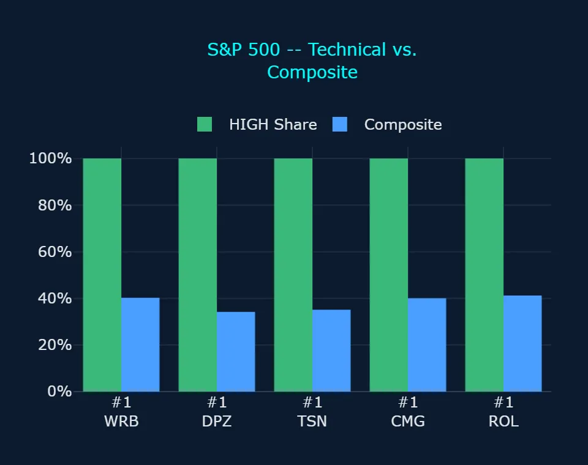
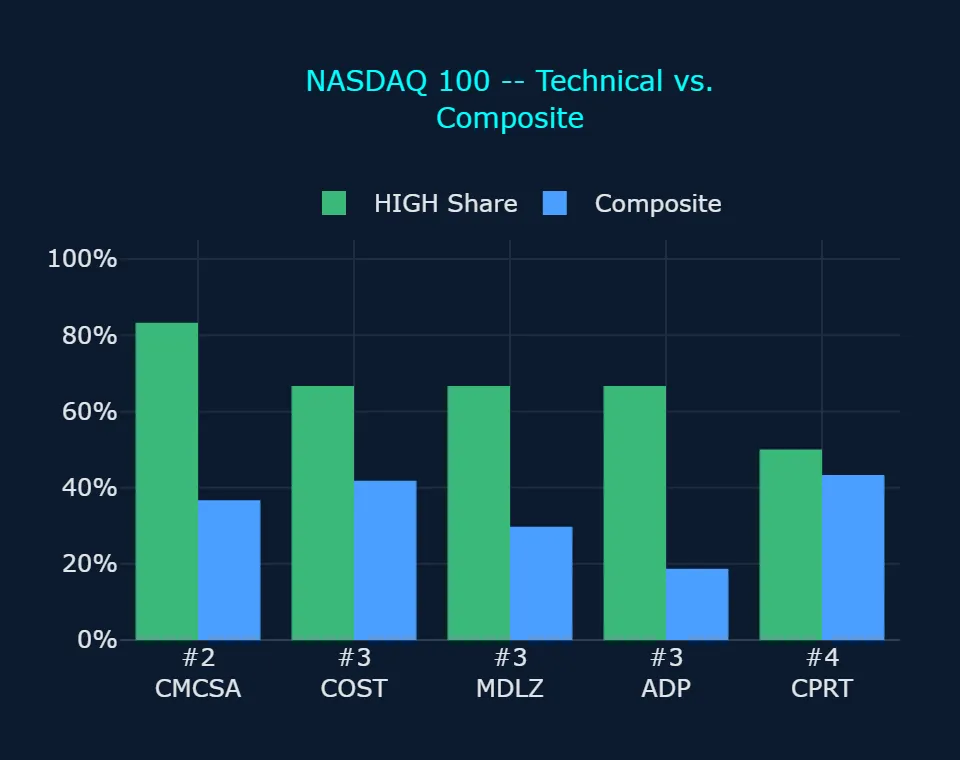

Zoonova AI: Pre-Market Quantitative Briefing – November 24, 2026
Session Quantitative Briefing: The Zoonova AI Intelligence Engine executes a hybrid architecture combining a proprietary Quad-Ensemble machine learning framework with Google Gemini Flash for real-time contextual synthesis and semantic macroeconomic grounding. The quantitative pipeline integrates four specialized estimators: Random Forest Regressor (RFR) for baseline structural stability, eXtreme Gradient Boosting (XGB) optimized for residual loss minimization, Categorical Boosting (CAT) for high-cardinality categorical signal processing, and Temporal Fusion Transformer (TFT) for multi-horizon price and volatility forecasting.
Zoonova AI: Pre-Market Momentum & Liquidity Report
1. QUANTITATIVE MODEL OVERVIEW & SIGNAL METRICS
Market intelligence is synthesized using Zoonova's Quad-Ensemble machine learning framework, combining Random Forest Regressor [RFR], eXtreme Gradient Boosting [XGB], Categorical Boosting [CAT], and Temporal Fusion Transformer [TFT] to generate predictive price targets and alpha probabilities. Market narrative tone is quantified using VADER for sentiment scoring, while systemic regime shifts and structural divergences are identified via BIRCH clustering for anomaly detection and macro breadth modeling.
- SPDR S&P 500 ETF Trust (SPY) closed at $722.29 on 2026-11-23 (cite: Zoonova, 2026-11-23), exhibiting a VADER sentiment of -42.0% alongside an ensemble projected one-year price target of $808.45, implying an advance of +11.9% by 2027-11-15.
- Invesco QQQ Trust Series 1 (QQQ) closed at $651.03 on 2026-11-23 (cite: Zoonova, 2026-11-23), carrying deeply negative sentiment at -89.0% yet modeling an ensemble projected target of $793.30 (+21.9% implied change) and a one-year excess alpha of +9.92%.
- SPDR Dow Jones Industrial Average ETF (DIA) closed at $495.80 on 2026-11-23 (cite: Zoonova, 2026-11-23) with sentiment at -70.0% and a projected target of $516.67 (+4.2% implied change), while Vanguard Total Bond Market ETF (BND) closed at $71.36 on 2026-11-23 with sentiment of -6.0% and a projected target of $75.85 (+6.3% implied change).
- SPDR Gold Shares ETF (GLD) closed at $333.02 on 2026-11-23 (cite: Zoonova, 2026-11-23), registering the lowest sentiment in the universe at -93.0% and an ensemble projected target of $343.13 (+3.0% implied change), accompanied by a one-year alpha of -8.89%.
- Underlying market breadth registered an expanding short-term recovery pattern, as BIRCH clustering confirmed Bullish Short-Term (3d) Trend Anomalies across 136 names: 87 stocks, 49 ETFs, contrasting with cautious headline index sentiment.
2. SENTIMENT INSIGHTS – TOP 5 HIGH & LOW
Top 5 High Sentiment Stocks
| Ticker | Company Name | Sentiment Score | Primary Catalyst / Driver |
|---|---|---|---|
| UBER | Uber Technologies Inc | +98.0% | Uber Technologies Inc expanded its autonomous mobility network by launching Zoox robotaxi rides on its platform in Las Vegas (Uber Newsroom, 2026-11-16). |
| MSI | Motorola Solutions Inc | +97.0% | Motorola Solutions Inc raised its full-year revenue and earnings outlook following record third-quarter orders and an all-time high ending backlog of $16.6 billion (Motorola Solutions, 2026-11-04). |
| SJT | San Juan Basin Royalty Trust | +96.0% | San Juan Basin Royalty Trust saw elevated speculative attention after Argent Trust Company detailed the cumulative excess production cost deficit balance of $9.7 million net to the trust (PR Newswire, 2026-11-19). |
| PRT | PermRock Royalty Trust | +95.0% | PermRock Royalty Trust declared a monthly cash distribution of $0.008479 per trust unit payable in December, supported by oil cash receipts rising to $1.18 million (Morningstar, 2026-11-19). |
| PVL | Permianville Royalty Trust | +95.0% | Permianville Royalty Trust announced a monthly cash distribution of $0.009500 per unit for December, bolstered by net proceeds from a non-producing acreage divestiture (Business Wire, 2026-11-18). |
Top 5 Low Sentiment Stocks
| Ticker | Company Name | Sentiment Score | Primary Friction / Risk Factor |
|---|---|---|---|
| GLD* | SPDR Gold Shares ETF | -93.0% | SPDR Gold Shares ETF experienced continued liquidation pressure as firm Treasury yields and post-election dollar strength dampened non-yielding bullion demand (AskTraders, 2026-11-23). |
| DLR | Digital Realty Trust Inc | -90.0% | Digital Realty Trust Inc faced sentiment headwinds from substantial ongoing capital expenditures required to fund utility power connections and hyperscale data center expansions (Digital Realty, 2026-11-17). |
| QQQ* | Invesco QQQ Trust Series 1 | -89.0% | Invesco QQQ Trust Series 1 absorbed negative sentiment as institutional investors digested elevated valuation multiples against sustained hardware capital expenditure cycles (AskTraders, 2026-11-23). |
| PTGX | Protagonist Therapeutics Inc | -86.0% | Protagonist Therapeutics Inc sentiment softened following executive share sales and management commentary noting that pipeline development in obesity will require external partner support (BioSpace, 2026-11-17). |
| COP | Conoco Phillips | -84.0% | ConocoPhillips saw sentiment contract after announcing a definitive agreement to divest its Norwegian business and Teesside oil terminal interest for $4.425 billion (Business Wire, 2026-11-23). |
* ETF (exchange-traded fund)
3. ALPHA PROBABILITY & PRICE DELTA LEADERBOARD – 1-YEAR HORIZON
S&P 500 – Top 5 High Alpha Probability (1yr)
| Ticker | Prev Close 2026-11-23 ($) | 1-Yr Target Price ($) | Alpha Probability (%) | Implied Excess Alpha (%) | 10%+ Alpha? |
|---|---|---|---|---|---|
| FIS | $26.73 | $36.16 | 70.01% | 23.33% | Both Yes |
| ORCL | $113.68 | $153.53 | 66.50% | 23.13% | Both Yes |
| APH | $77.41 | $89.70 | 59.36% | 3.96% | Split |
| FISV | $57.02 | $68.32 | 54.62% | 7.89% | Split |
| BSX | $42.33 | $46.09 | 50.19% | -3.05% | Split |
S&P 500 – Top 5 Price Delta + % Change (1yr)
| Ticker | Prev Close 2026-11-23 ($) | 1-Yr Target Price ($) | Absolute Delta ($) | Projected 1-Yr % Change (%) | Implied Excess Alpha (%) |
|---|---|---|---|---|---|
| AMD | $453.46 | $711.20 | $257.74 | 56.84% | 44.91% |
| NVDA | $165.05 | $240.42 | $75.37 | 45.66% | 33.73% |
| MPWR | $1,333.88 | $1,901.14 | $567.26 | 42.53% | 30.60% |
| MCHP | $61.22 | $84.07 | $22.85 | 37.32% | 25.39% |
| CCL | $27.91 | $38.26 | $10.35 | 37.08% | 25.14% |
NASDAQ 100 – Top 5 High Alpha Probability (1yr)
| Ticker | Prev Close 2026-11-23 ($) | 1-Yr Target Price ($) | Alpha Probability (%) | Implied Excess Alpha (%) | 10%+ Alpha? |
|---|---|---|---|---|---|
| NFLX | $58.10 | $64.54 | 35.69% | -0.85% | Both No |
| KLAC | $145.85 | $192.83 | 32.86% | 20.28% | Split |
| DXCM | $82.42 | $90.62 | 32.24% | -1.98% | Both No |
| CPRT | $31.62 | $34.22 | 31.19% | -3.69% | Both No |
| MRNA | $212.08 | $226.80 | 30.94% | -4.98% | Both No |
NASDAQ 100 – Top 5 Price Delta + % Change (1yr)
| Ticker | Prev Close 2026-11-23 ($) | 1-Yr Target Price ($) | Absolute Delta ($) | Projected 1-Yr % Change (%) | Implied Excess Alpha (%) |
|---|---|---|---|---|---|
| AMD | $453.46 | $711.20 | $257.74 | 56.84% | 44.91% |
| NVDA | $165.05 | $240.42 | $75.37 | 45.66% | 33.73% |
| MCHP | $61.22 | $84.07 | $22.85 | 37.32% | 25.39% |
| AMAT | $346.87 | $459.49 | $112.62 | 32.47% | 20.54% |
| KLAC | $145.85 | $192.83 | $46.98 | 32.21% | 20.28% |
4. REAL-TIME CONTEXTUAL ENRICHMENT
Broader market conditions through November 24, 2026, reflect an evolving macroeconomic landscape where investors balance ongoing Federal Reserve rate path calibration against persistent growth fundamentals. Benchmark equity sentiment remains cautious, with SPDR S&P 500 ETF Trust (SPY) sentiment at -42.0% and Invesco QQQ Trust Series 1 (QQQ) sentiment at -89.0%. SPY (ETF) closed at $722.29 on 2026-11-23 (cite: Zoonova, 2026-11-23) and QQQ (ETF) closed at $651.03 on 2026-11-23 (cite: Zoonova, 2026-11-23). Despite headline caution, BIRCH clustering confirmed Bullish Short-Term (3d) Trend Anomalies across both funds and 136 names: 87 stocks, 49 ETFs, signaling that underlying market breadth is staging an active recovery.
Within single equities, financial technology and enterprise computing display the strongest predictive alignment across the Quad-Ensemble framework. Fidelity National Information Services, Inc. (FIS) leads the Main Scorecard with the top Composite score of 70.9, an Alpha Rating of 76.8, and a Macro Alignment of 90.1, after it closed at $26.73 on 2026-11-23 (cite: Zoonova, 2026-11-23). For FIS, both models expect it to beat the benchmark by 10%+, supported by an S&P 500 leading one-year Alpha Probability of 70.01% and a projected one-year Alpha of +23.33%, underpinned fundamentally by core banking software retention and balance sheet deleveraging targets (Compounding Dividends, 2026-11-07). Oracle Corp. (ORCL) closed at $113.68 on 2026-11-23 (cite: Zoonova, 2026-11-23) and generated a Composite of 61.6 and Macro Alignment of 90.0 in the Main Scorecard, where both models expect it to beat the benchmark by 10%+ via a 66.50% Alpha Probability and a +23.13% one-year Alpha, reinforced by the expansion of SambaNova inference architecture across Oracle Cloud Infrastructure (Fidelity Investments, 2026-10-27).
Sector dispersion remains pronounced between defensive resource vehicles and cash-generative technology providers. In communications and public safety, Motorola Solutions Inc (MSI) logged Sentiment of +97.0% with an annualized volatility of 24.18%, buoyed by an increased full-year financial outlook and record order backlogs (Motorola Solutions, 2026-11-04). Conversely, ConocoPhillips (COP) registered Sentiment of -84.0% with an annualized volatility of 32.40% as markets evaluated portfolio dilution from its $4.425 billion Norwegian asset sale to Var Energi (Business Wire, 2026-11-23). In the Main Scorecard, semiconductor bellwethers Intel Corp. (INTC) and NVIDIA Corp (NVDA) posted Composites of 60.3 and 57.6, respectively; while both registered Bullish Short-Term (3d) Trend Anomalies, the two models split on 10%+ excess alpha potential for both names.
5. ANOMALY DETECTION SCANNER
Direction: Bearish
Moderate Severity (1 stock)
- CRWD – Crowdstrike Holdings Inc: Bearish Short-Term (3d) Trend Anomaly, Bearish Long-Term (1w) Trend Anomaly
Low Severity (9 stocks)
- AVGO – Broadcom Inc: Bearish Long-Term (1w) Trend Anomaly
- ELV – Elevance Health Inc: Bearish Long-Term (1w) Trend Anomaly
- HUM – Humana Inc.: Bearish Long-Term (1w) Trend Anomaly
- MPC – Marathon Petroleum Corp: Bearish Long-Term (1w) Trend Anomaly
- PM – Philip Morris International Inc: Bearish Long-Term (1w) Trend Anomaly
- PSX – Phillips 66: Bearish Long-Term (1w) Trend Anomaly
- UNH – Unitedhealth Group Inc: Bearish Long-Term (1w) Trend Anomaly
- VGZ – Vista Gold Corp.: Bearish Long-Term (1w) Trend Anomaly
- VLO – Valero Energy Corp.: Bearish Long-Term (1w) Trend Anomaly
Direction: Bullish
Moderate Severity (2 stocks)
- INSM – Insmed Inc: Bullish Short-Term (3d) Trend Anomaly, Bullish Long-Term (1w) Trend Anomaly
- OKTA – Okta Inc: Bullish Short-Term (3d) Trend Anomaly, Bullish Long-Term (1w) Trend Anomaly
Low Severity (136 names: 87 stocks, 49 ETFs)
- ACWI* – iShares MSCI ACWI ETF: Bullish Short-Term (3d) Trend Anomaly
- ADI – Analog Devices Inc.: Bullish Short-Term (3d) Trend Anomaly
- AMAT – Applied Materials Inc.: Bullish Short-Term (3d) Trend Anomaly
- AME – Ametek Inc: Bullish Short-Term (3d) Trend Anomaly
- ANET – Arista Networks Inc: Bullish Short-Term (3d) Trend Anomaly
- APH – Amphenol Corp.: Bullish Short-Term (3d) Trend Anomaly
- ARKQ* – ARK Autonomous Technology & Robotics ETF: Bullish Short-Term (3d) Trend Anomaly
- ARKW* – ARK Next Generation Internet ETF: Bullish Short-Term (3d) Trend Anomaly
- ASML – ASML Holding NV: Bullish Short-Term (3d) Trend Anomaly
- ASND – Ascendis Pharma A/S: Bullish Short-Term (3d) Trend Anomaly
- AXSM – Axsome Therapeutics Inc: Bullish Short-Term (3d) Trend Anomaly
- BEN – Franklin Resources, Inc.: Bullish Short-Term (3d) Trend Anomaly
- CAT – Caterpillar Inc.: Bullish Short-Term (3d) Trend Anomaly
- CDNA – Caredx Inc: Bullish Short-Term (3d) Trend Anomaly
- CDNS – Cadence Design Systems, Inc.: Bullish Short-Term (3d) Trend Anomaly
- CMI – Cummins Inc.: Bullish Short-Term (3d) Trend Anomaly
- CRL – Charles River Laboratories International Inc.: Bullish Short-Term (3d) Trend Anomaly
- CSCO – Cisco Systems, Inc.: Bullish Short-Term (3d) Trend Anomaly
- DAL – Delta Air Lines, Inc.: Bullish Short-Term (3d) Trend Anomaly
- DD – DuPont de Nemours Inc: Bullish Short-Term (3d) Trend Anomaly
- DIA* – SPDR Dow Jones Industrial Average ETF: Bullish Short-Term (3d) Trend Anomaly
- ECL – Ecolab, Inc.: Bullish Short-Term (3d) Trend Anomaly
- EEM* – iShares MSCI Emerging Markets ETF: Bullish Short-Term (3d) Trend Anomaly
- EFA* – iShares MSCI EAFE ETF: Bullish Short-Term (3d) Trend Anomaly
- EMR – Emerson Electric Co.: Bullish Short-Term (3d) Trend Anomaly
- ESGU* – iShares Trust iShares ESG Aware MSCI USA ETF: Bullish Short-Term (3d) Trend Anomaly
- ETN – Eaton Corporation plc: Bullish Short-Term (3d) Trend Anomaly
- EXEL – Exelixis Inc: Bullish Short-Term (3d) Trend Anomaly
- FFIV – F5 Inc: Bullish Short-Term (3d) Trend Anomaly
- FTNT – Fortinet Inc: Bullish Short-Term (3d) Trend Anomaly
- GE – GE Aerospace: Bullish Short-Term (3d) Trend Anomaly
- GH – Guardant Health Inc: Bullish Short-Term (3d) Trend Anomaly
- GLW – Corning, Inc.: Bullish Short-Term (3d) Trend Anomaly
- GOOG – Alphabet Inc: Bullish Short-Term (3d) Trend Anomaly
- GOOGL – Alphabet Inc: Bullish Short-Term (3d) Trend Anomaly
- GRMN – Garmin Ltd: Bullish Short-Term (3d) Trend Anomaly
- HEI – Heico Corp.: Bullish Short-Term (3d) Trend Anomaly
- HPE – Hewlett Packard Enterprise Co: Bullish Short-Term (3d) Trend Anomaly
- HWM – Howmet Aerospace Inc: Bullish Short-Term (3d) Trend Anomaly
- IBB* – iShares Nasdaq Biotechnology ETF: Bullish Short-Term (3d) Trend Anomaly
- IEMG* – iShares Core MSCI Emerging Markets ETF: Bullish Short-Term (3d) Trend Anomaly
- IJH* – iShares Core S&P Mid-Cap ETF: Bullish Short-Term (3d) Trend Anomaly
- INTC – Intel Corp.: Bullish Short-Term (3d) Trend Anomaly
- IR – Ingersoll-Rand Inc: Bullish Short-Term (3d) Trend Anomaly
- IRM – Iron Mountain Inc.: Bullish Short-Term (3d) Trend Anomaly
- ITOT* – iShares Core S&P Total U.S. Stock Market ETF: Bullish Short-Term (3d) Trend Anomaly
- IVE* – iShares S&P 500 Value ETF: Bullish Short-Term (3d) Trend Anomaly
- IVV* – iShares Core S&P 500 ETF: Bullish Short-Term (3d) Trend Anomaly
- IVW* – iShares S&P 500 Growth ETF: Bullish Short-Term (3d) Trend Anomaly
- IVZ – Invesco Ltd: Bullish Short-Term (3d) Trend Anomaly
- IWB* – iShares Russell 1000 ETF: Bullish Short-Term (3d) Trend Anomaly
- IWF* – iShares Russell 1000 Growth ETF: Bullish Short-Term (3d) Trend Anomaly
- IWP* – iShares Russell Mid-Cap Growth ETF: Bullish Short-Term (3d) Trend Anomaly
- IWR* – iShares Russell Mid-Cap ETF: Bullish Short-Term (3d) Trend Anomaly
- IXUS* – iShares Core MSCI Total International Stock ETF: Bullish Short-Term (3d) Trend Anomaly
- J – Jacobs Solutions Inc: Bullish Short-Term (3d) Trend Anomaly
- JCI – Johnson Controls International plc: Bullish Short-Term (3d) Trend Anomaly
- KEYS – Keysight Technologies Inc: Bullish Short-Term (3d) Trend Anomaly
- KLAC – KLA Corp.: Bullish Short-Term (3d) Trend Anomaly
- LGND – Ligand Pharmaceuticals, Inc.: Bullish Short-Term (3d) Trend Anomaly
- LRCX – Lam Research Corp.: Bullish Short-Term (3d) Trend Anomaly
- MDY* – S&P MidCap 400 ETF: Bullish Short-Term (3d) Trend Anomaly
- MEDP – Medpace Holdings Inc: Bullish Short-Term (3d) Trend Anomaly
- META – Meta Platforms Inc: Bullish Short-Term (3d) Trend Anomaly
- MNOV – Medicinova Inc: Bullish Short-Term (3d) Trend Anomaly
- MPWR – Monolithic Power System Inc: Bullish Short-Term (3d) Trend Anomaly
- MRNA – Moderna Inc: Bullish Short-Term (3d) Trend Anomaly
- MRVL – Marvell Technology Inc: Bullish Short-Term (3d) Trend Anomaly
- MS – Morgan Stanley: Bullish Short-Term (3d) Trend Anomaly
- MU – Micron Technology Inc.: Bullish Short-Term (3d) Trend Anomaly
- NBIX – Neurocrine Biosciences, Inc.: Bullish Short-Term (3d) Trend Anomaly
- NDSN – Nordson Corp.: Bullish Short-Term (3d) Trend Anomaly
- NET – Cloudflare Inc: Bullish Short-Term (3d) Trend Anomaly
- NRG – NRG Energy Inc.: Bullish Short-Term (3d) Trend Anomaly
- NTAP – Netapp Inc: Bullish Short-Term (3d) Trend Anomaly
- NTRA – Natera Inc: Bullish Short-Term (3d) Trend Anomaly
- NVDA – NVIDIA Corp: Bullish Short-Term (3d) Trend Anomaly
- NXPI – NXP Semiconductors NV: Bullish Short-Term (3d) Trend Anomaly
- ORCL – Oracle Corp.: Bullish Short-Term (3d) Trend Anomaly
- PANW – Palo Alto Networks Inc: Bullish Long-Term (1w) Trend Anomaly
- PFF* – iShares Trust iShares Preferred and Income Securities ETF: Bullish Short-Term (3d) Trend Anomaly
- PH – Parker-Hannifin Corp.: Bullish Short-Term (3d) Trend Anomaly
- PLTR – Palantir Technologies Inc: Bullish Short-Term (3d) Trend Anomaly
- PRLB – Proto Labs Inc: Bullish Short-Term (3d) Trend Anomaly
- PWR – Quanta Services, Inc.: Bullish Short-Term (3d) Trend Anomaly
- QCOM – Qualcomm, Inc.: Bullish Short-Term (3d) Trend Anomaly
- QQQ* – Invesco QQQ Trust Series 1: Bullish Short-Term (3d) Trend Anomaly
- RL – Ralph Lauren Corp: Bullish Short-Term (3d) Trend Anomaly
- ROK – Rockwell Automation Inc: Bullish Short-Term (3d) Trend Anomaly
- RSP* – Invesco S&P 500 Equal Weight ETF: Bullish Short-Term (3d) Trend Anomaly
- RVMD – Revolution Medicines Inc: Bullish Short-Term (3d) Trend Anomaly
- SCCO – Southern Copper Corporation: Bullish Short-Term (3d) Trend Anomaly
- SCHB* – Schwab U.S. Broad Market ETF: Bullish Short-Term (3d) Trend Anomaly
- SCHF* – Schwab International Equity ETF: Bullish Short-Term (3d) Trend Anomaly
- SCHG* – Schwab U.S. Large-Cap Growth ETF: Bullish Short-Term (3d) Trend Anomaly
- SCHX* – Schwab U.S. Large-Cap ETF: Bullish Short-Term (3d) Trend Anomaly
- SPY* – SPDR S&P 500 ETF Trust: Bullish Short-Term (3d) Trend Anomaly
- SPYG* – State Street SPDR Portfolio S&P 500 Growth ETF: Bullish Short-Term (3d) Trend Anomaly
- STT – State Street Corp.: Bullish Short-Term (3d) Trend Anomaly
- STX – Seagate Technology Holdings Plc: Bullish Short-Term (3d) Trend Anomaly
- TDY – Teledyne Technologies Inc: Bullish Short-Term (3d) Trend Anomaly
- TEL – TE Connectivity plc: Bullish Short-Term (3d) Trend Anomaly
- TER – Teradyne, Inc.: Bullish Short-Term (3d) Trend Anomaly
- TPR – Tapestry Inc: Bullish Short-Term (3d) Trend Anomaly
- TSLA – Tesla Inc: Bullish Short-Term (3d) Trend Anomaly
- TT – Trane Technologies plc: Bullish Short-Term (3d) Trend Anomaly
- TWLO – Twilio Inc: Bullish Short-Term (3d) Trend Anomaly
- TWST – Twist Bioscience Corp: Bullish Short-Term (3d) Trend Anomaly
- TXG – 10x Genomics Inc: Bullish Short-Term (3d) Trend Anomaly
- TXN – Texas Instruments Inc.: Bullish Short-Term (3d) Trend Anomaly
- UAL – United Airlines Holdings Inc: Bullish Short-Term (3d) Trend Anomaly
- URI – United Rentals, Inc.: Bullish Short-Term (3d) Trend Anomaly
- USMV* – iShares MSCI USA Min Vol Factor ETF: Bullish Short-Term (3d) Trend Anomaly
- VBK* – Vanguard Small Cap Growth ETF: Bullish Short-Term (3d) Trend Anomaly
- VEA* – Vanguard FTSE Developed Markets ETF: Bullish Short-Term (3d) Trend Anomaly
- VEU* – Vanguard FTSE All-World ex-US ETF: Bullish Short-Term (3d) Trend Anomaly
- VGT* – Vanguard Information Technology ETF: Bullish Short-Term (3d) Trend Anomaly
- VIG* – Vanguard Dividend Appreciation FTF: Bullish Short-Term (3d) Trend Anomaly
- VLUE* – iShares MSCI USA Value Factor ETF: Bullish Short-Term (3d) Trend Anomaly
- VO* – Vanguard Mid-Cap ETF: Bullish Short-Term (3d) Trend Anomaly
- VOO* – Vanguard S&P 500 ETF: Bullish Short-Term (3d) Trend Anomaly
- VRTX – Vertex Pharmaceuticals, Inc.: Bullish Short-Term (3d) Trend Anomaly
- VT* – Vanguard Total World Stock ETF: Bullish Short-Term (3d) Trend Anomaly
- VTI* – Vanguard Total Stock Market ETF: Bullish Short-Term (3d) Trend Anomaly
- VTV* – Vanguard Value ETF: Bullish Short-Term (3d) Trend Anomaly
- VUG* – Vanguard Growth ETF: Bullish Short-Term (3d) Trend Anomaly
- VV* – Vanguard Large Cap ETF: Bullish Short-Term (3d) Trend Anomaly
- VWO* – Vanguard FTSE Emerging Markets ETF: Bullish Short-Term (3d) Trend Anomaly
- VXF* – Vanguard Extended Market Index ETF: Bullish Short-Term (3d) Trend Anomaly
- VXUS* – Vanguard Total International Stock ETF: Bullish Short-Term (3d) Trend Anomaly
- WAB – Westinghouse Air Brake Technologies Corp: Bullish Short-Term (3d) Trend Anomaly
- WDC – Western Digital Corp.: Bullish Short-Term (3d) Trend Anomaly
- XLC* – Communication Services Select Sector SPDR Fund: Bullish Short-Term (3d) Trend Anomaly
- XLI* – Industrial Select Sector SPDR: Bullish Short-Term (3d) Trend Anomaly
- XLK* – Technology Select Sector SPDR ETF: Bullish Short-Term (3d) Trend Anomaly
- ZYME – Zymeworks BC Inc: Bullish Short-Term (3d) Trend Anomaly
Direction: Mixed
Moderate Severity (6 names: 3 stocks, 3 ETFs)
- AMD – Advanced Micro Devices Inc.: Bullish Short-Term (3d) Trend Anomaly, Bearish Long-Term (1w) Trend Anomaly
- GDX* – VanEck Gold Miners ETF: Bullish Short-Term (3d) Trend Anomaly, Bearish Long-Term (1w) Trend Anomaly
- GLD* – SPDR Gold Shares ETF: Bullish Short-Term (3d) Trend Anomaly, Bearish Long-Term (1w) Trend Anomaly
- GS – Goldman Sachs Group, Inc.: Bullish Short-Term (3d) Trend Anomaly, Bearish Long-Term (1w) Trend Anomaly
- IAU* – iShares Gold Trust: Bullish Short-Term (3d) Trend Anomaly, Bearish Long-Term (1w) Trend Anomaly
- NEM – Newmont Corp: Bullish Short-Term (3d) Trend Anomaly, Bearish Long-Term (1w) Trend Anomaly
* ETF (exchange-traded fund)
6. STRATEGIC INVESTMENT ASSESSMENT
- Overweight high-conviction enterprise software and fintech leaders: Fidelity National Information Services, Inc. (FIS) and Oracle Corp. (ORCL) occupy premier positions in the Main Scorecard, where both models expect each company to beat the benchmark by 10%+ alongside one-year Alpha Probabilities of 70.01% and 66.50% and one-year Alpha projections of +23.33% and +23.13%, respectively.
- Harness broadening market participation: With BIRCH clustering confirming Bullish Short-Term (3d) Trend Anomalies across 136 names: 87 stocks, 49 ETFs, short-term accumulation is broadening across index components despite negative headline sentiment in SPY (ETF) (-42.0%) and QQQ (ETF) (-89.0%).
- Differentiate semiconductor exposures based on model consensus: Although Advanced Micro Devices Inc. (AMD) and NVIDIA Corp (NVDA) model robust one-year projected Alpha deltas of +44.91% and +33.73%, the two models split regarding 10%+ hurdle clearance for both, while AMD also carries a Mixed Moderate severity anomaly comprising a Bullish Short-Term (3d) Trend Anomaly and a Bearish Long-Term (1w) Trend Anomaly.
- Underweight lagging commodity and capital-intensive assets: SPDR Gold Shares ETF (GLD) exhibits deeply negative Sentiment of -93.0% and an expected one-year Alpha of -8.89%, while ConocoPhillips (COP) carries depressed Sentiment of -84.0% amidst portfolio restructuring execution risks.
7. STOCK SCORECARD
Main Scorecard
| Ticker | Composite (%) | Alpha Rating | 10%+ Alpha? | Projected 1-Yr Change (%) | Street Consensus (Upside) | Next Earnings | Sentiment Rating | Technical Signal | Macro Alignment | Anomaly Flag | Catalyst / Risk | Market Cap | EPS Revisions (30d) | Short Interest / DTC | Options Flow | Earnings Surprise (4Q) | Bias |
|---|---|---|---|---|---|---|---|---|---|---|---|---|---|---|---|---|---|
| FIS | 70.9% | 76.8 | Both Yes | +35.3% | Hold (+53.8%) | 2027-02-16 | 69.5 | 50.0 | 90.1 | None | Banking Solutions Transition | $13.3B | Downward (-6.5%) | 3.5% / 2.9 DTC | Neutral / Mixed | 3/4 Beats | Bullish |
| APH | 70.7% | 65.2 | Split | +15.9% | Buy (+37.2%) | 2027-01-21 | 74.0 | 75.0 | 69.6 | Bullish (3d) | AI Interconnect Demand | $172.2B | Upward (+4.2%) | 2.3% / 2.0 DTC | Bullish (Call Skew) | 4/4 Beats | Bullish |
| FFIV | 67.6% | 37.5 | Both No | +19.2% | Hold (+38.4%) | 2027-01-26 | 90.0 | 75.0 | 75.6 | Bullish (3d) | Enterprise Software Demand | $19.5B | Downward (-1.8%) | 4.5% / 3.4 DTC | Neutral / Mixed | 4/4 Beats | Bullish |
| MRVL | 64.5% | 22.0 | Both No | +18.6% | Strong Buy (+109.7%) | 2026-12-03 (in 9d) | 96.5 | 75.0 | 75.1 | Bullish (3d) | Custom Silicon Ramp | $106.8B | Upward (+3.2%) | 2.4% / 1.8 DTC | Bullish (Call Skew) | 4/4 Beats (+4.5% avg) | Neutral |
| LRCX | 64.3% | 21.3 | Split | +28.0% | Strong Buy (+70.5%) | 2027-01-21 | 87.5 | 75.0 | 86.3 | Bullish (3d) | Wafer Fabrication Demand | $254.4B | Upward (+5.4%) | 2.8% / 1.9 DTC | Bullish (Call Skew) | 4/4 Beats (+6.2% avg) | Neutral |
| TER | 62.1% | 19.6 | Both No | +14.7% | Buy (+70.3%) | 2027-01-27 | 96.5 | 75.0 | 67.0 | Bullish (3d) | AI Compute Testing | $36.5B | Upward (+2.8%) | 3.1% / 2.2 DTC | Bullish (Call Skew) | 4/4 Beats | Neutral |
| ORCL | 61.6% | 73.0 | Both Yes | +35.1% | Buy (+119.3%) | 2026-12-14 (in 20d) | 12.0 | 75.0 | 90.0 | Bullish (3d) | Cloud Backlog Expansion | $343.7B | Downward (-2.4%) | 1.9% / 1.7 DTC | Bullish (Call Skew) | 3/4 Beats | Bearish |
| GLW | 60.9% | 37.9 | Both No | +20.0% | Buy (+59.0%) | 2027-01-26 | 61.5 | 75.0 | 77.2 | Bullish (3d) | Data Center Fiber | $93.6B | Upward (+2.1%) | 3.2% / 2.5 DTC | Bullish (Call Skew) | 4/4 Beats | Neutral |
| INTC | 60.3% | 21.7 | Split | +29.1% | Hold (+51.9%) | 2027-01-28 | 70.0 | 75.0 | 87.6 | Bullish (3d) | Foundry Customer Wins | $272.6B | Downward (-4.8%) | 4.1% / 2.8 DTC | Bullish (Call Skew) | 3/4 Beats | Neutral |
| URI | 60.1% | 18.0 | Both No | +16.5% | Buy (+19.0%) | 2027-01-27 | 87.0 | 75.0 | 70.7 | Bullish (3d) | Mega Project Utilization | $67.4B | Upward (+3.1%) | 3.8% / 2.7 DTC | Bullish (Call Skew) | 4/4 Beats | Neutral |
| ARKQ* | 59.9% | 21.8 | Split | +22.8% | N/A (ETF) | N/A (ETF) | 74.0 | 75.0 | 80.6 | Bullish (3d) | Robotics Secular Trends | $1.9B | N/A (ETF) | 2.6% / 1.5 DTC | Neutral / Mixed | N/A (ETF) | Neutral |
| KLAC | 59.9% | 36.1 | Split | +32.2% | Buy (+51.1%) | 2027-01-22 | 50.0 | 75.0 | 89.0 | Bullish (3d) | Advanced Node Metrology | $188.8B | Upward (+3.9%) | 2.5% / 1.8 DTC | Bullish (Call Skew) | 4/4 Beats | Neutral |
| NRG | 59.5% | 35.0 | Split | +30.4% | Buy (+68.7%) | 2027-02-18 | 50.0 | 75.0 | 88.6 | Bullish (3d) | AI Power Demand | $20.4B | Downward (-2.1%) | 4.8% / 3.2 DTC | Bullish (Call Skew) | 3/4 Beats | Neutral |
| FISV | 58.9% | 59.9 | Split | +19.8% | Hold (+13.9%) | 2027-02-08 | 52.5 | 50.0 | 76.6 | None | Merchant Solutions Growth | $33.5B | Downward (-1.2%) | 2.7% / 2.3 DTC | Neutral / Mixed | 4/4 Beats | Neutral |
| INSM | 58.8% | 27.1 | Split | +22.5% | Buy (+31.8%) | 2027-02-23 | 38.5 | 100.0 | 80.3 | Bullish (3d/1w) | Brinsupri Commercial Ramp | $26.6B | Upward (+8.4%) | 6.9% / 3.6 DTC | Bullish (Call Skew) | 3/4 Beats | Bearish |
| MNOV | 58.7% | 30.4 | Split | +26.3% | Buy | 2027-03-12 | 56.5 | 75.0 | 83.7 | Bullish (3d) | Combat ALS Readout | $62.5M | N/A (Pre-Revenue) | 1.1% / 1.4 DTC | Neutral / Mixed | 2/4 Beats | Neutral |
| TXG | 45.6% | 19.2 | Split | +28.8% | Hold (+18.6%) | 2027-02-11 | 14.5 | 75.0 | 87.3 | Bullish (3d) | Spatial Biology Adoption | $6.8B | Downward (-4.1%) | 11.2% / 4.8 DTC | Bearish (Put Heavy) | 2/4 Beats | Bearish |
| XLK* | 42.8% | 16.1 | Both No | +14.4% | N/A (ETF) | N/A (ETF) | 23.5 | 75.0 | 66.5 | Bullish (3d) | Mega Cap Rebound | $91.8B | N/A (ETF) | 1.5% / 1.0 DTC | Bullish (Call Skew) | N/A (ETF) | Bearish |
| NFLX | 42.1% | 39.2 | Both No | +11.1% | Buy (+53.4%) | 2027-01-19 | 25.0 | 50.0 | 58.2 | None | Ad Tier Growth | $239.0B | Downward (-3.2%) | 2.1% / 1.6 DTC | Neutral / Mixed | 4/4 Beats | Bearish |
| GLD* | 19.7% | 18.3 | Both No | +3.0% | N/A (ETF) | N/A (ETF) | 3.5 | 50.0 | 4.3 | Bullish (3d), Bearish (1w) | Central Bank Inflows | $141.5B | N/A (ETF) | 1.2% / 1.1 DTC | Neutral / Mixed | N/A (ETF) | Bearish |
* ETF (exchange-traded fund)
10%+ Alpha? – whether Zoonova's two 1-year models (alpha probability and price target) expect the stock to beat the benchmark by 10%+. “Both No” is common: 10% is a high bar.
Tech Stock Scorecard
| Ticker | Composite (%) | Alpha Rating | 10%+ Alpha? | Projected 1-Yr Change (%) | Street Consensus (Upside) | Next Earnings | Sentiment Rating | Technical Signal | Macro Alignment | Anomaly Flag | Catalyst / Risk | Market Cap | EPS Revisions (30d) | Short Interest / DTC | Options Flow | Earnings Surprise (4Q) | Bias |
|---|---|---|---|---|---|---|---|---|---|---|---|---|---|---|---|---|---|
| INTC | 60.3% | 21.7 | Split | +29.1% | Hold (+51.9%) | 2027-01-28 | 70.0 | 75.0 | 87.6 | Bullish (3d) | Foundry Customer Wins | $272.6B | Downward (-4.8%) | 4.1% / 2.8 DTC | Bullish (Call Skew) | 3/4 Beats | Neutral |
| NVDA | 57.6% | 25.4 | Split | +45.7% | Buy (+58.7%) | 2027-02-24 | 51.5 | 75.0 | 91.8 | Bullish (3d) | Leadership Return Rebound | $3.99T | Upward (+5.1%) | 1.3% / 1.2 DTC | Bullish (Call Skew) | 4/4 Beats (+6.1% avg) | Neutral |
| TSLA | 56.5% | 8.2 | Both No | +14.8% | Hold (+9.2%) | 2027-01-27 | 87.5 | 75.0 | 67.2 | Bullish (3d) | Autonomous Vehicle Scaling | $1.35T | Downward (-6.1%) | 3.7% / 1.9 DTC | Bullish (Call Skew) | 2/4 Beats | Neutral |
| AMD | 53.7% | 2.1 | Split | +56.8% | Buy (+41.7%) | 2027-02-02 | 88.5 | 50.0 | 92.5 | Bullish (3d), Bearish (1w) | Data Center Growth | $696.0B | Upward (+7.8%) | 2.9% / 2.1 DTC | Bullish (Call Skew) | 4/4 Beats | Neutral |
| META | 47.7% | 8.4 | Both No | +11.9% | Strong Buy (+39.4%) | 2027-01-27 | 57.0 | 75.0 | 60.8 | Bullish (3d) | AI Ad Optimization | $1.43T | Downward (-5.2%) | 1.4% / 1.5 DTC | Bullish (Call Skew) | 3/4 Beats | Neutral |
| GOOGL | 38.9% | 10.2 | Both No | +6.6% | Buy (+46.2%) | 2027-01-28 | 50.0 | 75.0 | 23.1 | Bullish (3d) | Cloud Search Monetization | $3.42T | Downward (-3.5%) | 1.0% / 1.2 DTC | Bullish (Call Skew) | 3/4 Beats | Bearish |
| MSFT | 34.8% | 3.1 | Both No | +3.0% | Buy (+24.4%) | 2027-01-26 | 82.5 | 50.0 | 3.7 | None | Azure Cloud Monetization | $3.70T | Upward (+2.6%) | 0.8% / 1.3 DTC | Bullish (Call Skew) | 4/4 Beats | Bearish |
| AVGO | 33.5% | 7.4 | Both No | +12.7% | Buy (+67.5%) | 2026-12-09 (in 15d) | 50.0 | 25.0 | 62.7 | Bearish (1w) | Custom ASIC Acceleration | $1.45T | Upward (+3.4%) | 1.6% / 1.7 DTC | Bullish (Call Skew) | 4/4 Beats | Bearish |
| AAPL | 28.6% | 4.9 | Both No | +4.0% | Buy (-0.6%) | 2027-02-04 | 51.5 | 50.0 | 8.8 | None | IPhone Replacement Cycle | $4.98T | Upward (+1.4%) | 0.9% / 1.5 DTC | Bullish (Call Skew) | 4/4 Beats | Bearish |
| AMZN | 23.4% | 5.0 | Both No | +7.4% | Buy (+25.6%) | 2027-02-04 | 12.0 | 50.0 | 32.2 | None | AWS Margin Expansion | $2.67T | Downward (-2.8%) | 1.1% / 1.4 DTC | Neutral / Mixed | 3/4 Beats | Bearish |
| SPCX | N/H | N/H | N/A | N/A | Buy | 2027-02-25 | N/H | N/H | N/H | None | Starlink Fleet Expansion | $1.74T | N/A (Recent IPO) | 4.2% / 2.3 DTC | Bullish (Call Skew) | N/A (No Coverage) | N/A |
N/H: no ML scores yet (insufficient trading history for the models).
Search-grounded columns (Street Consensus (Upside), Next Earnings, Catalyst / Risk, Market Cap, EPS Revisions (30d), Short Interest / DTC, Options Flow, Earnings Surprise (4Q)): MarketBeat, ETFdb, State Street, ARK Invest (sources dated 2026-11-20 to 2026-11-24).






Educational purposes only. Not investment advice.
Zoonova AI: Pre-Market Technical Analysis Report
Leading S&P 500 names post 6/6 HIGH indicators amid Divergent composites, while NASDAQ 100 breadth remains muted at 0.8 average HIGH count.
1. 6 CORE INDICATORS
Indicator levels (LOW / MEDIUM / HIGH) and % Cluster come from Zoonova's BIRCH model (Balanced Iterative Reducing and Clustering using Hierarchies), an unsupervised machine-learning clustering model used for pattern recognition. Each indicator is clustered across the stock universe; % Cluster is the centroid of the cluster a stock falls in.
| Indicator | Category | Role |
|---|---|---|
| ARUPAroon Up | Trend Direction | Recency of the highest high in the lookback window; collapses in bear markets, so HIGH means price keeps printing fresh swing highs. |
| +DIPositive Directional Indicator | Trend Direction | Upward directional movement relative to true range; unlike ADX it collapses in sell-offs, so HIGH confirms buyer-driven expansion. |
| MFIMoney Flow Index | Volume / Inflow | Volume-weighted RSI from 0 to 100; falls as money leaves on down days, so HIGH means inflow on up days outweighs outflow. |
| CMFChaikin Money Flow | Volume / Inflow | Close location within the bar weighted by volume; plunges negative in liquidation, so HIGH confirms sustained buying into the top of daily ranges. |
| TSITrue Strength Index | Momentum | Double-smoothed momentum from -100 to +100; deeply negative in downtrends, so HIGH shows consistent multi-period upward thrust. |
| UOUltimate Oscillator | Momentum | Buying pressure across 7-, 14- and 28-period windows from 0 to 100; sinks when closes sit near the lows, so HIGH means buyers are in control on every timeframe. |
2. TECHNICAL REGIME
| Index | Universe | All HIGH (6/6) | Avg HIGH | Aroon Up HIGH | +DI HIGH | MFI HIGH | CMF HIGH | TSI HIGH | UO HIGH |
|---|---|---|---|---|---|---|---|---|---|
| S&P 500 | 424 | 7 | 1.1/6 | 74 | 68 | 101 | 66 | 96 | 41 |
| NASDAQ 100 | 71 | 0 | 0.8/6 | 9 | 11 | 15 | 5 | 12 | 2 |
The S&P 500 displays moderate technical engagement across its 424 constituents, with 7 stocks with all indicators HIGH and an average HIGH count of 1.1, led by MFI with 101 members at HIGH. Conversely, the NASDAQ 100 demonstrates narrower breadth across its 71 constituents, recording 0 stocks with all indicators HIGH and an average HIGH count of 0.8, where CMF registers only 5 members at HIGH.
3. TOP 5 BULLISH CONFLUENCE
Ranking: Rank = HIGH count (#1 = 6/6, #2 = 5/6, ...); within a rank, Sentiment (desc), then ticker. Sentiment only orders tickers within a rank; it is not a technical signal.
S&P 500 – Top 5 Bullish Confluence
| Rank | Ticker | Aroon Up | +DI | MFI | CMF | TSI | UO | HIGH | Sentiment |
|---|---|---|---|---|---|---|---|---|---|
| 1 | WRB | HIGH 83.5% | HIGH 50.1% | HIGH 70.2% | HIGH 77.9% | HIGH 80.1% | HIGH 65.7% | 6/6 | +93.0% |
| 1 | DPZ | HIGH 83.5% | HIGH 50.1% | HIGH 70.2% | HIGH 77.9% | HIGH 80.1% | HIGH 65.7% | 6/6 | +48.0% |
| 1 | TSN | HIGH 83.5% | HIGH 50.1% | HIGH 70.2% | HIGH 77.9% | HIGH 80.1% | HIGH 65.7% | 6/6 | +5.0% |
| 1 | CMG | HIGH 83.5% | HIGH 50.1% | HIGH 70.2% | HIGH 77.9% | HIGH 80.1% | HIGH 65.7% | 6/6 | 0.0% |
| 1 | ROL | HIGH 83.5% | HIGH 50.1% | HIGH 70.2% | HIGH 77.9% | HIGH 80.1% | HIGH 65.7% | 6/6 | 0.0% |
S&P 500 – Signal Groups
| Rank | Ticker | Trend Direction | Volume / Inflow | Momentum |
|---|---|---|---|---|
| 1 | WRB | 2 of 2 HIGH | 2 of 2 HIGH | 2 of 2 HIGH |
| 1 | DPZ | 2 of 2 HIGH | 2 of 2 HIGH | 2 of 2 HIGH |
| 1 | TSN | 2 of 2 HIGH | 2 of 2 HIGH | 2 of 2 HIGH |
| 1 | CMG | 2 of 2 HIGH | 2 of 2 HIGH | 2 of 2 HIGH |
| 1 | ROL | 2 of 2 HIGH | 2 of 2 HIGH | 2 of 2 HIGH |
NASDAQ 100 – Top 5 Bullish Confluence
| Rank | Ticker | Aroon Up | +DI | MFI | CMF | TSI | UO | HIGH | Sentiment |
|---|---|---|---|---|---|---|---|---|---|
| 2 | CMCSA | HIGH 83.5% | HIGH 50.1% | HIGH 70.2% | HIGH 77.9% | HIGH 80.1% | MEDIUM 46.5% | 5/6 | 0.0% |
| 3 | COST | HIGH 83.5% | HIGH 50.1% | HIGH 70.2% | MEDIUM 56.6% | HIGH 80.1% | MEDIUM 46.5% | 4/6 | +82.0% |
| 3 | MDLZ | HIGH 83.5% | HIGH 50.1% | HIGH 70.2% | MEDIUM 56.6% | HIGH 80.1% | MEDIUM 46.5% | 4/6 | 0.0% |
| 3 | ADP | HIGH 83.5% | HIGH 50.1% | HIGH 70.2% | MEDIUM 56.6% | HIGH 80.1% | LOW 28.4% | 4/6 | -74.0% |
| 4 | CPRT | MEDIUM 50.4% | HIGH 50.1% | MEDIUM 51.9% | HIGH 77.9% | HIGH 80.1% | LOW 28.4% | 3/6 | 0.0% |
NASDAQ 100 – Signal Groups
| Rank | Ticker | Trend Direction | Volume / Inflow | Momentum |
|---|---|---|---|---|
| 2 | CMCSA | 2 of 2 HIGH | 2 of 2 HIGH | 1 of 2 HIGH |
| 3 | COST | 2 of 2 HIGH | 1 of 2 HIGH | 1 of 2 HIGH |
| 3 | MDLZ | 2 of 2 HIGH | 1 of 2 HIGH | 1 of 2 HIGH |
| 3 | ADP | 2 of 2 HIGH | 1 of 2 HIGH | 1 of 2 HIGH |
| 4 | CPRT | 1 of 2 HIGH | 1 of 2 HIGH | 1 of 2 HIGH |
4. TICKER READS
S&P 500
- #1 WRB – 6/6 HIGH, reflecting full alignment across Trend Direction (2 of 2 HIGH), Volume / Inflow (2 of 2 HIGH), and Momentum (2 of 2 HIGH). The presence of HIGH cluster levels in Aroon Up, +DI, MFI, CMF, TSI, and UO confirms expansive price thrust and volume accumulation. However, the Divergent verdict highlights tension between unanimous technicals and a 40.2 Composite burdened by a 0.8 Alpha Rating and 16.8 Macro Alignment. Watch: any slip from HIGH in Aroon Up or CMF to signal fading inflows.
- #1 DPZ – 6/6 HIGH, with all indicators in the top cluster spanning Trend Direction, Volume / Inflow, and Momentum. Sustained buying pressure and trend expansion are evidenced by HIGH levels across Aroon Up, +DI, CMF, and TSI. The Divergent verdict emerges from a weak 34.2 Composite, driven down by a 7.8 Macro Alignment and 5.6 Alpha Rating despite a +48.0% Sentiment. Watch: UO or MFI falling from HIGH to indicate cooling demand.
- #1 TSN – 6/6 HIGH, establishing consistent upside expansion across Trend Direction, Volume / Inflow, and Momentum. Unanimous HIGH levels in indicators including +DI, MFI, and TSI confirm persistent accumulation into upper bar ranges. A Divergent verdict persists as the technical strength contrasts with a 35.1 Composite, constrained by a 2.4 Alpha Rating. Watch: a drop from HIGH in CMF or +DI to break trend alignment.
- #1 CMG – 6/6 HIGH, demonstrating multi-indicator agreement across Trend Direction, Volume / Inflow, and Momentum. Bullish directional thrust is confirmed by HIGH cluster positioning in Aroon Up, TSI, and UO alongside steady inflows in CMF and MFI. This setup generates a Divergent verdict against a 40.0 Composite, reflecting an Alpha Rating of 20.5 and neutral 0.0% Sentiment. Watch: any deterioration from HIGH in TSI or Aroon Up.
- #1 ROL – 6/6 HIGH, securing top cluster placement across all three signal groups: Trend Direction, Volume / Inflow, and Momentum. The combination of HIGH levels in +DI, CMF, and UO signals that buyer-driven expansion and liquidity inflows remain intact. The Divergent verdict underscores a gap between complete technical confirmation and a 41.2 Composite limited by a 37.9 Macro Alignment. Watch: MFI or CMF slipping below HIGH to signal reduced inflows.
NASDAQ 100
- #2 CMCSA – 5/6 HIGH, backed by full agreement in Trend Direction (2 of 2 HIGH) and Volume / Inflow (2 of 2 HIGH), alongside TSI at HIGH in Momentum. The sole non-HIGH indicator is UO at MEDIUM, signaling minor moderation in multi-timeframe buying pressure. A Divergent verdict applies because strong technical participation contrasts with a 36.7 Composite weighed down by a 13.7 Alpha Rating. Watch: UO advancing to HIGH or TSI falling to MEDIUM.
- #3 COST – 4/6 HIGH, characterized by solid Trend Direction (2 of 2 HIGH) via Aroon Up and +DI, paired with HIGH levels in MFI and TSI. Volume / Inflow and Momentum remain partially split as CMF and UO register at MEDIUM. The Mixed verdict reflects this balanced technical profile combined with a 41.8 Composite, where a 91.0 Sentiment Rating offsets a 1.1 Alpha Rating. Watch: CMF moving to HIGH to confirm stronger accumulation.
- #3 MDLZ – 4/6 HIGH, supported by intact Trend Direction (2 of 2 HIGH) through Aroon Up and +DI, alongside MFI and TSI at HIGH. Momentum and Volume / Inflow show moderate friction with CMF and UO sitting at MEDIUM. With a 29.7 Composite dampened by a 2.2 Alpha Rating and 19.9 Macro Alignment, the resulting verdict is Mixed. Watch: Aroon Up or TSI slipping from HIGH to signal trend fatigue.
- #3 ADP – 4/6 HIGH, maintaining Trend Direction (2 of 2 HIGH) with Aroon Up and +DI at HIGH, supported by MFI and TSI. However, Momentum is fractured by UO at LOW while Volume / Inflow shows CMF at MEDIUM. The Mixed verdict pairs this partial technical strength with an 18.7 Composite, hindered by a 13.0 Sentiment Rating and negative -74.0% Sentiment. Watch: UO rebounding from LOW or +DI dropping to MEDIUM.
- #4 CPRT – 3/6 HIGH, presenting a divided structure with 1 of 2 HIGH across Trend Direction, Volume / Inflow, and Momentum. Positive evidence is anchored by +DI, CMF, and TSI in the HIGH cluster, but Aroon Up and MFI are at MEDIUM while UO sits at LOW. This distributed profile produces a Mixed verdict alongside a 43.3 Composite supported by a 34.2 Alpha Rating. Watch: earnings on 2026-12-01 and whether Aroon Up recovers to HIGH.
5. TECHNICAL VS. COMPOSITE MODEL CHECK
Composite is the Zoonova Scorecard (0-100), normalized across the full universe: 30% Alpha (1-year probability of beating the benchmark by 10%+), 25% Sentiment, 25% Technical (bullish minus bearish anomaly flags; 50 = none) and 20% Macro (1-year alpha percentile).
Verdict: Confirmed = strong technicals (HIGH share 75% or more) with Composite 55 or more; Divergent = one strong and the other weak (strong technicals with Composite below 45, or weak technicals, HIGH share below 50%, with Composite 55 or more); Weak = both weak; otherwise Mixed.
S&P 500 – Technical vs. Composite
| Rank | Ticker | HIGH | Composite | Verdict |
|---|---|---|---|---|
| 1 | WRB | 6/6 | 40.2% | Divergent |
| 1 | DPZ | 6/6 | 34.2% | Divergent |
| 1 | TSN | 6/6 | 35.1% | Divergent |
| 1 | CMG | 6/6 | 40.0% | Divergent |
| 1 | ROL | 6/6 | 41.2% | Divergent |
NASDAQ 100 – Technical vs. Composite
| Rank | Ticker | HIGH | Composite | Verdict |
|---|---|---|---|---|
| 2 | CMCSA | 5/6 | 36.7% | Divergent |
| 3 | COST | 4/6 | 41.8% | Mixed |
| 3 | MDLZ | 4/6 | 29.7% | Mixed |
| 3 | ADP | 4/6 | 18.7% | Mixed |
| 4 | CPRT | 3/6 | 43.3% | Mixed |
- WRB: WRB pairs a unanimous 6/6 HIGH technical profile with a Divergent 40.2 Composite suppressed by a 0.8 Alpha Rating and 16.8 Macro Alignment.
- DPZ: DPZ exhibits 6/6 HIGH indicators that diverge from a 34.2 Composite weighed down by a 7.8 Macro Alignment and 5.6 Alpha Rating.
- TSN: TSN carries 6/6 HIGH indicators across all signal groups, conflicting with a 35.1 Composite constrained by a 2.4 Alpha Rating.
- CMG: CMG shows complete 6/6 HIGH technical strength that clashes with a 40.0 Composite muted by a 20.5 Alpha Rating.
- ROL: ROL generates 6/6 HIGH technical confirmation yet yields a Divergent 41.2 Composite reflecting a 28.8 Alpha Rating and 37.9 Macro Alignment.
- CMCSA: CMCSA displays strong technicals with 5/6 HIGH indicators, diverging from a 36.7 Composite burdened by a 13.7 Alpha Rating.
6. TECHNICAL CONTEXT
- CPRT – Copart is scheduled to release its first-quarter fiscal 2027 financial results before the market opens on 2026-12-01. (Nasdaq, 2026-11-17)
- WRB – W.R. Berkley traded to a fresh one-year high following an analyst price target increase on 2026-11-20. (MarketBeat, 2026-11-20)
- CMCSA – Comcast received an analyst upgrade on 2026-11-23 citing separation catalysts for its network and media assets. (GuruFocus, 2026-11-23)
7. TECHNICAL ASSESSMENT
The overall technical posture is defined by strong leadership among top S&P 500 names with 6/6 HIGH indicators, contrasted by subdued participation across the broader market where the NASDAQ 100 averages 0.8 HIGH indicators. All top S&P 500 candidates carry Divergent verdicts, as clean indicator groupings across Trend Direction, Volume / Inflow, and Momentum face headwinds from low Alpha Rating and Macro Alignment metrics. The primary risk to this setup is momentum fatigue, where any slip from HIGH in volume accumulation metrics like CMF or MFI could trigger mean reversion given the lack of underlying fundamental score support.




Educational purposes only. Not investment advice.